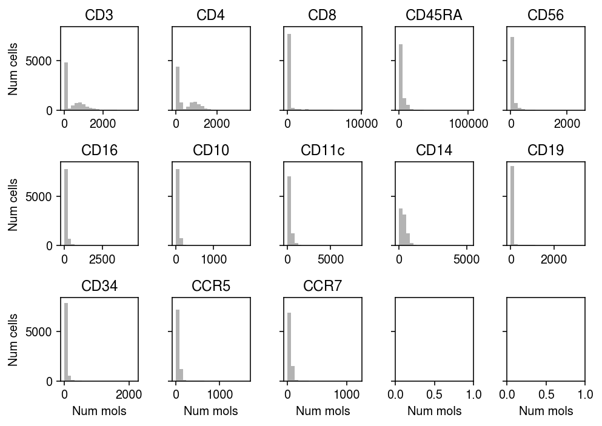
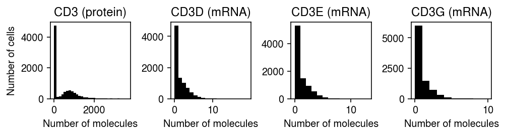
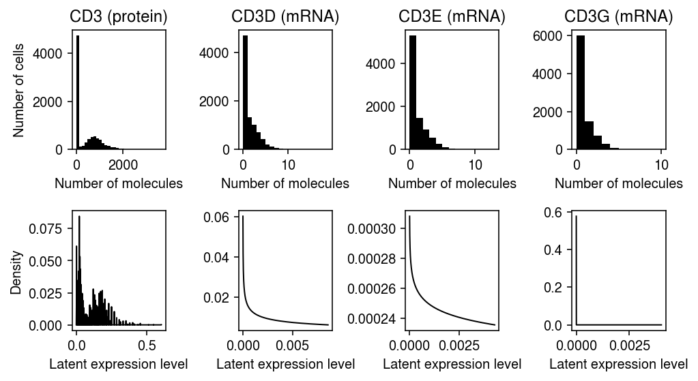

Buffering of RNA expression variation
Table of Contents
Introduction
Recent advances have enabled simultaneous, high-throughput measurement of RNA and protein expression (CITE-seq, Stoeckius et al. 2017; REAP-seq, Peterson et al. 2017; Abseq, Shahi et al. 2017). These experiments have revealed that protein expression is often only weakly correlated with RNA expression. However, the fact that RNA and protein expression are not necessarily perfectly correlated is well understood; indeed, early experiments in model organisms clearly indicate this lack of correlation (e.g., Elowitz et al. 2002).
To explain this lack of correlation, variation in RNA expression among single cells has been partitioned into intrinsic variation (i.e., due to the action of polymerase) and extrinsic variation (e.g., due to availability of polymerase, transcription factors, etc.; reviewed Raj and van Oudenaarden 2008). Subsequently, physically-motivated statistical models of intrinsic variation in RNA expression have been developed and estimated from data (Peccoud and Ycart 1995, Raj et al. 2006, Munsky et al. 2012, Kim and Marioni 2013, Amrhein et al. 2019, Larsson et al. 2019). In turn, physically-motivated models of protein expression variation have been developed and estimated from data (Paulsson et al. 2000, Swain et al. 2002, Shahrezaei and Swain 2008). In summary, these models indicate that protein expression variation is buffered against RNA expression variation through the process of translation.
Open problems. How well can protein expression be predicted from RNA expression using recent high-throughput assays? How well can it be explained by additive models as opposed to more complex models? How can we combine fine-mapping (variable selection) models with multiple imputation (Rubin 1987) to handle denoised observations?
What are the consequences of buffering of RNA expression variation at the protein expressionlevel on making biological inferences from RNA expression data alone? If RNA expression is a poor proxy for protein expression, does it follow that explaining genetic/environmental effects on phenotype through RNA expression alone is fundamentally limited, if not fundamentally flawed?
Setup
import anndata import numpy as np import pandas as pd import pickle import scanpy import scipy.sparse as ss import scipy.special as sp import scipy.stats as st import scmodes
import rpy2.robjects.packages import rpy2.robjects.pandas2ri rpy2.robjects.pandas2ri.activate() ashr = rpy2.robjects.packages.importr('ashr')
%matplotlib inline %config InlineBackend.figure_formats = set(['retina'])
import matplotlib.collections import matplotlib.pyplot as plt plt.rcParams['figure.facecolor'] = 'w' plt.rcParams['font.family'] = 'Nimbus Sans'
Methods
Data sets
- CBMC CITE-seq (Stoeckius et al. 2017; GSE100866)
- REAP-seq (Peterson et al. 2017; GSE100501)
PBMC CITE-seq (Lawlor et al. 2021; data available from HCA)
parallel curl --ftp-pasv -O <<EOF https://ftp.ncbi.nlm.nih.gov/geo/series/GSE100nnn/GSE100866/suppl/GSE100866_CBMC_8K_13AB_10X-ADT_umi.csv.gz https://ftp.ncbi.nlm.nih.gov/geo/series/GSE100nnn/GSE100866/suppl/GSE100866_CBMC_8K_13AB_10X-RNA_umi.csv.gz https://ftp.ncbi.nlm.nih.gov/geo/series/GSE100nnn/GSE100866/suppl/GSE100866_CD8_merged-ADT_umi.csv.gz https://ftp.ncbi.nlm.nih.gov/geo/series/GSE100nnn/GSE100866/suppl/GSE100866_CD8_merged-RNA_umi.csv.gz https://ftp.ncbi.nlm.nih.gov/geo/series/GSE100nnn/GSE100866/suppl/GSE100866_PBMC_vs_flow_10X-ADT_umi.csv.gz https://ftp.ncbi.nlm.nih.gov/geo/series/GSE100nnn/GSE100866/suppl/GSE100866_PBMC_vs_flow_10X-RNA_umi.csv.gz EOF curl "https://www.ncbi.nlm.nih.gov/geo/download/?acc=GSE100501&format=file" -o GSE100501.tar
mkdir -p reap-seq tar xf GSE100501.tar -C reap-seq
Measurement model for CITE-seq/REAP-seq observations
Recall that observed RNA molecule counts \(x_{ij}\) at gene \(j = 1, \ldots p\) in sample \(i = 1, \ldots, n\) can be described as (Sarkar and Stephens 2020) \( \DeclareMathOperator\Bern{Bernoulli} \DeclareMathOperator\Pois{Poisson} \DeclareMathOperator\Gam{Gamma} \newcommand\E[1]{\left\langle #1 \right\rangle} \newcommand\xiplus{x_{i+}} \newcommand\yiplus{y_{i+}} \newcommand\const{\mathrm{const}} \)
\begin{equation} x_{ij} \mid \xiplus, \lambda_{ij} \sim \Pois(\xiplus \lambda_{ij}) \end{equation}where \(\lambda_{ij}\) denotes (latent) relative gene expression level and \(\xiplus \triangleq \sum_j x_{ij}\). Protein expression levels measured via CITE-seq/REAP-seq are counts of unique barcodes (similar to UMIs); therefore, it is reasonable to begin with a Poisson measurement model for observed protein molecule counts,
\begin{equation} y_{ij} \mid \yiplus, \rho_{ij} \sim \Pois(\yiplus \rho_{ij}), \end{equation}where \(\rho_{ij}\) denotes (latent) relative protein expression level and \(\yiplus \triangleq \sum_j y_{ij}\). It follows that a single-gene protein expression model can be specified as a distribution \(\rho_{ij} \sim \tilde{g}_j(\cdot)\), analogous to models for RNA expression variation \(\lambda_{ij} \sim g_j(\cdot)\).
Remark. totalVI
(Gayoso et al. 2021)
combines a Poisson measurement model with a protein expression model
where the Gamma distribution is parameterized by shape and rate, and the
mixture components represent background (non-specific) and foreground (tagged)
distributions of antibody abundances. However, the motivation for the
specific choice of background component is not clear. cTP-net
(Zhou et al. 2020)
minimizes the \(\ell_1\)-norm of the difference between relative protein
expression levels predicted using de-noised RNA expression levels and the
observed
clr-transformed
(relative) protein expression levels. Thus, it does not account for
measurement error in the protein expression data.
Gamma mixture expression model
Gayoso et al. 2021 propose a mixture of two Gamma distributions protein expression model,
\begin{align} \rho_i \mid z_i = 0 &\sim \Gam(a, b)\\ \rho_i \mid z_i = 1 &\sim \Gam(a, b - d), d > 0\\ z_i &\sim \Bern(p) \end{align}where the Gamma distribution is parameterized by shape and rate and we have fixed gene \(j\). The key idea is to account for the fact that antibodies may bind non-specifically, by constraining the foreground distribution \(z_i = 1\) to have larger mean than the background distribution. Here, derive an EM algorithm for the resulting observation model. The log joint
\begin{align} \ln p(x_i, z_i, \rho_i \mid z_i = 0, s_i, a, b, d, p) = x_i \ln (s_i \rho_i) - s_i \rho_i + (1 - z_i) (\ln (1 - p) + a \ln b + a \ln\rho_i - b\rho_i - \ln\Gamma(a)) + z_i (\ln p + a \ln (b - d) + a \ln\rho_i - (b - d)\rho_i - \ln\Gamma(a)) + \const \end{align}thus the posteriors
\begin{align} q(z_i \mid \rho_i) &= z_i (\ln p + \Gam(\rho_i; a, b - d)) + (1 - z_i) (\ln (1 - p) + \Gam(\rho_i; a, b)) + \const\\ &= \Bern\left(\frac{\Gam(\rho_i; a, b - d)}{\Gam(\rho_i; a, b - d) + \Gam(\rho_i; a, b)}\right)\\ q(\rho_i \mid z_i = 1) &= x_i \ln (s_i\rho_i) - s_i \rho_i + a\ln\rho_i - (b - d)\rho_i + \const\\ &= \Gam(x_i + a, s_i + b - d)\\ q(\rho_i \mid z_i = 0) &= \Gam(x_i + a, s_i + b). \end{align}The expected log joint with respect to \(q\)
\begin{multline} h \triangleq \sum_i \E{\ln p(x_i, z_i, \rho_i \mid z_i = 0, s_i, a, b, d, p)} = \sum_i x_i (\ln s_i + \E{\ln\rho_i})- s_i \E{\rho_i}\\ + \E{(1 - z_i)} (\ln (1 - p) + a \ln b + a \E{\ln\rho_i} - b\E{\rho_i} - \ln\Gamma(a))\\ + \E{z_i} (\ln p + a \ln (b - d) + a \E{\ln\rho_i} - (b - d)\E{\rho_i} - \ln\Gamma(a)) + \const, \end{multline}yielding M step updates
\begin{align} \frac{\partial h}{\partial p} &= \sum_i \frac{\E{1 - z_i}}{1 - p} + \E{z_i}{p} = 0\\ \ln\left(\frac{p}{1 - p}\right) &:= \ln\left(\frac{\sum_i \E{z_i}}{\sum_i \E{1 - z_i}}\right)\\ \frac{\partial h}{\partial b} &= \sum_i \E{1 - z_i}\left(\frac{a}{b} - \E{\rho_i}\right) + \E{z_i}\left(\frac{a}{b - d} - \E{\rho_i}\right) = 0\\ \frac{\partial h}{\partial d} &= \sum_i \E{z_i}\left(\frac{a}{b - d} - \E{\rho_i}\right) = 0\\ \frac{\partial h}{\partial a} &= \sum_i \E{1 - z_i}(\ln b + \E{\ln\rho_i} - \psi(a)) + \E{z_i}(\ln (b - d) + \E{\ln\rho_i} - \psi(a))\\ \frac{\partial^2 h}{\partial a^2} &= -\sum_i \E{1 - z_i} \psi^{(1)}(a) - \E{z_i}\psi^{(1)}(a) \end{align}Predicting protein expression from RNA expression
The major challenge in predicting protein expression from RNA expression is that both responses and predictors are noisy. Handling noise in predictors is well-studied (Fuller 1987), and can be addressed using e.g., multiple imputation (Little and Rubin 1987). Handling noise in the response follows naturally from the measurement model for protein expression observations above.
Remark. cTP-net does not account for uncertainty in the de-noised
expression levels when predicting protein expression levels from RNA
expression levels. totalVI is a full generative model for both RNA and
protein expression; however, it is unclear whether missing (protein
expression) observations are handled. In principle, they could be handled by
producing an approximate posterior predictive distribution for the
unobserved protein expression levels, given observed data.
Results
Pre-process the data
Pre-process the data into sparse matrices for convenience.
prot = pd.read_csv('/scratch/midway2/aksarkar/singlecell/GSE100866_CBMC_8K_13AB_10X-ADT_umi.csv.gz', index_col=0).T rna = pd.read_csv('/scratch/midway2/aksarkar/singlecell/GSE100866_CBMC_8K_13AB_10X-RNA_umi.csv.gz', index_col=0).T
prot = anndata.AnnData(ss.csc_matrix(prot.values), obs=pd.DataFrame(prot.index, columns=['barcode']), var=pd.DataFrame(prot.columns, columns=['gene'])) rna = anndata.AnnData(ss.csc_matrix(rna.values), obs=pd.DataFrame(rna.index, columns=['barcode']), var=pd.DataFrame(rna.columns, columns=['gene'])) prot, rna
(AnnData object with n_obs × n_vars = 8617 × 13 obs: 'barcode' var: 'gene', AnnData object with n_obs × n_vars = 8617 × 36280 obs: 'barcode' var: 'gene')
prot.write_h5ad('GSE100866_CBMC_8K_13AB_10X-ADT.h5ad') rna.write_h5ad('GSE100866_CBMC_8K_13AB_10X-RNA.h5ad')
CBMC CITE-seq
Read the sparse data.
prot = anndata.read_h5ad('GSE100866_CBMC_8K_13AB_10X-ADT.h5ad') rna = anndata.read_h5ad('GSE100866_CBMC_8K_13AB_10X-RNA.h5ad')
Gayoso et al. proposed a NB mixture observation model for protein expression. There are only 13 proteins measured, so we can just look at the empirical distribution of observed counts for all of them.
plt.clf() fig, ax = plt.subplots(3, 5, sharey=True) fig.set_size_inches(7, 5) for a, j in zip(ax.ravel(), range(prot.shape[1])): y = prot[:,j].X.A.ravel() a.hist(y, bins=20, color='0.7') a.set_title(prot.var.loc[str(j), 'gene']) for a in ax: a[0].set_ylabel('Num cells') for a in ax.T: a[-1].set_xlabel('Num mols') fig.tight_layout()

The mapping of RNAs to proteins is complex, since e.g., CD3D, CD3E, and CD3G all encode protein subnits of the cell surface marker CD3.
mapping = { 'CD3': ['CD3D', 'CD3E', 'CD3G'], 'CD4': ['CD4'], 'CD8': ['CD8A', 'CD8B'], 'CD45RA': ['PTPRC'], 'CD56': ['NCAM1'], 'CD16': ['FCGR3A', 'FCGR3B'], 'CD10': ['MME'], 'CD11c': ['ITGAX'], 'CD14': ['CD14'], 'CD19': ['CD19'], 'CD34': ['CD34'], 'CCR5': ['CCR5'], 'CCR7': ['CCR7'], }
Look more closely at CD3.
plt.clf() fig, ax = plt.subplots(1, 4) fig.set_size_inches(7, 2) ax[0].hist(prot[:,prot.var['gene'] == 'CD3'].X.A.ravel(), bins=30, color='k') ax[0].set_title('CD3 (protein)') for g, a in zip(mapping['CD3'], ax[1:]): x = rna[:,rna.var['gene'] == f'HUMAN_{g}'].X.A.ravel() a.hist(x, bins=np.arange(x.max() + 1), color='k') a.set_title(f'{g} (mRNA)') ax[0].set_ylabel('Number of cells') for a in ax: a.set_xlabel('Number of molecules') fig.tight_layout()

Fit a point-Gamma RNA expression model for the CD3 subunit genes, and fit a fully non-parametric protein expression model for CD3.
fits = { 'CD3': scmodes.ebpm.ebpm_npmle(prot[:,prot.var['gene'] == 'CD3'].X.A.ravel(), prot.X.sum(axis=1).A.ravel(), verbose=True) } fits.update({ f'HUMAN_{g}': scmodes.ebpm.ebpm_point_gamma(rna[:,rna.var['gene'] == f'HUMAN_{g}'].X.A.ravel(), rna.X.sum(axis=1).A.ravel()) for g in mapping['CD3'] })
with open('cbmc-cd3-fits.pkl', 'wb') as f: pickle.dump(fits, f)
Plot the fitted expression and observation models against the observed data.
N = prot.shape[0] plt.clf() fig, ax = plt.subplots(2, 4) fig.set_size_inches(7, 4) y = prot[:,prot.var['gene'] == 'CD3'].X.A.ravel() s = prot.X.sum(axis=1).A.ravel() ax[0][0].hist(y, bins=30, color='k') ax[0][0].set_title('CD3 (protein)') grid = np.linspace(0, (y / s).max(), 1000) F = ashr.cdf_ash(fits['CD3'], grid).rx2('y').ravel() ax[1][0].plot(grid[:-1], np.diff(F), lw=1, c='k') s = rna.X.sum(axis=1).A.ravel() for g, a, b in zip(mapping['CD3'], ax[0][1:], ax[1][1:]): x = rna[:,rna.var['gene'] == f'HUMAN_{g}'].X.A.ravel() a.hist(x, bins=np.arange(x.max() + 1), color='k') a.set_title(f'{g} (mRNA)') grid = np.linspace(0, (x / s).max(), 1000) F = sp.expit(fits[f'HUMAN_{g}'][2]) * st.gamma(a=np.exp(fits[f'HUMAN_{g}'][1]), scale=np.exp(fits[f'HUMAN_{g}'][1] - fits[f'HUMAN_{g}'][0])).pdf(grid) F[0] += sp.expit(-fits[f'HUMAN_{g}'][2]) b.plot(grid, F, lw=1, c='k') for a, l in zip(ax[:,0], ['Number of cells', 'Density']): a.set_ylabel(l) for a, b in zip(ax[0], ax[1]): a.set_xlabel('Number of molecules') b.set_xlabel('Latent expression level') fig.tight_layout()
